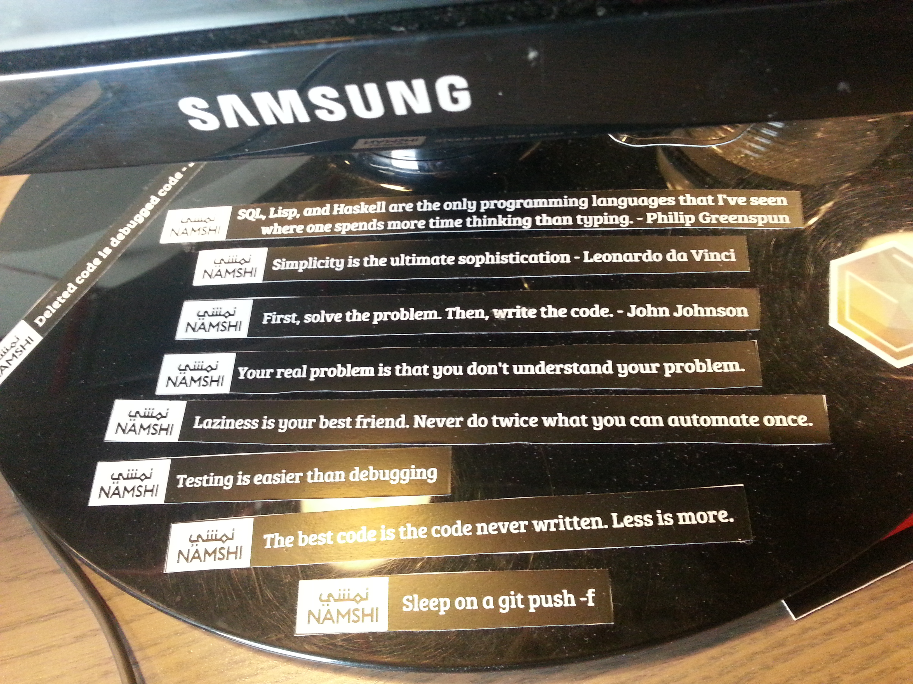

Message Queues
A basic overview
Geshan Manandhar
Quality and Maintenance Lead, Namshi.com
@geshan
geshan.com.np
Index
- What is Message Queue(MQ)
- MQ basics - AMQP
- Benefits
- Rabbit MQ
- Our setup/stack
- When to use it /Practical Usecase
- Logging and monitoring
- Conclusion
What is Message Queue
- "message queues and mailboxes are software-engineering components used for inter-process communication (IPC), or for inter-thread communication within the same process. They use a queue for messaging – the passing of control or of content." - Wikipedia
- Message queues are software components that allow producers to produce message to a queue managed by a message broker, these message are asynchronously consumed by consumers.
Message Queue Basics
- Protocols : Advanced Message Queueing Protocol(AMQP) and Streaming Text Oriented Messaging Protocol(STOMP)
- Producer/Publisher
- Message Broker - Queue Exchange
- Queue
- Consumer
Benefits of MQ
- Decoupling
- Scalability
- Reliability
- Fanout - Same message to multiple queues (Pub/Sub)
Rabbit MQ
Our Software stack/services
relating to with Rabbit MQ
- Symfony 2 with old sound rabbit mq bundle and Monolog
- Rabbit Mq on http://www.cloudamqp.com/
- Service Oriented Architecture (SOA) with 3rd party API integrations
When to use message queues
Some practical use cases
- Backend -> Frontend sync (db to NOSQL/Memcache)
- Communication between multiple internal systems (without API)
- Asynchronous 3rd party API calls
- Notifications like email and sms
- Handling large request asynchronously
- Processing intensive tasks- like image resize
Logging and monitoring is vital
- Only access and error logs from web server and database are surely not enough
- Logs are first class citizen, adopt active logging from application level.(Monolog)
- Use dedicated log management system like GrayLog 2
- Monitor application activity in real-time with services like NewRelic
- Log optimally and verbose enough to give enough information about the context.
Conclusion/Recap
- Communication between two systems can be done even without APIs
- Language agnostic implementation is enable by using message queues
- Message queues could be that answer you were looking for, to communicate between different systems
- For scalability, decoupling and reliability utilize message queues
- You could potentially scale to 1 million message per second : Pivotal
- Logging and monitoring are inevitable when doing asynchronous processing
Questions???

Credits
- http://keyholesoftware.com/2013/05/13/messaging-with-rabbitmq/
- https://www.flickr.com/photos/i8ipod/9028050858
Some programming mantras to remember.
